History
Early Years
Raven were formed in Newcastle, England in 1974 by brothers Mark Gallagher (guitar, backing vocals) and John Gallagher (bass, lead vocals). In 1974.The Gallagher brothers went on holiday in Spain, Mark got a spanish acoustic guitar and they were both messing around with it.. Mark and a kid from down the street came up to John and said - "we wanna form a band and you can play bass!" and that was it - from there they had to learn how to play - and try and get some equipment!! In Christmas 1974, the brothers Mark and John Gallagher were given instruments by their parents, Mark had a Fender Telecaster copy. John's was a Fender-Jazz-Bass copy. It's a great way to make heavy metal, as Ian Hill of Judas Priest proved for over a decade. A jagged bass had to come! So John got a thick plywood board and began to saw. After work and a red paint job later, the body was bolted to a fender-like neck, mind you: it was not a fender neck - the Raven Bass was finished! Teaming with guitarist Paul Bowden, the three musicians spent months working out songs before they recruited drummer Paul Sherrif and began playing out. They'd rehearse in a church hall for a few hours, then ritually throw their gear around and trash guitars, no audience. They loved fast stuff the best according to John - 'Highway Star, Breadfan... It was a gradual thing but they liked the high tempos and a lot of chord changes.
The name Raven came from John putting it on a list and it was the one they liked the best, back in 1975.
Their first gig was in December 1975 At their first show they did “Now I’m Here” by QUEEN, “Stealin’“ by URIAH HEEP, “Roll Over Lay Down” by STATUS QUO.
In 1976, Mike "Mick" Kenworthy replaced Sherrif behind the drums, and a year later Sean Taylor was the group's new timekeeper.
The first song written was a song called “Hitting the road”. A a bit from it was put it into the “hellraiser/action”Sweet cover on the 1st album! Another early song was "Turn it Down" Raven started off playing some original songs including the above plus covers including: 'Breaking All The House Rules' by Budgie or 'Highway Star' by Deep Purple, “Stealin” by Uriah Heep and a couple of Judas Priest ones – 'Hell Bent For Leather' or 'Victim of Changes' – and a couple of AC/DC songs.
Raven opened for The Stranglers in '76 or '77. The great thing about the Stranglers show is the original guitar player, Hugh Cornwell, came up to Raven before they were going to play and said, 'Does anyone got perfect pitch?' John Gallagher said, 'Yeah!' He said, 'Give me an E,' so John sung an E. He tuned his guitar and walked on stage and started to play! and if that's not Rock n' Roll, I don't know what is!
Pete Shore signed on as Raven's new guitarist in 1979 after Bowden left the group, and Rob "Wacko" Hunter took over on drums from Sean Taylor later the same year.
The Neat Years
By this time, the group had become a frequent attraction at rock clubs in the North of England, and Neat Records, a independent metal label in Newcastle, approached the band about making a record.
{kind=link}
Released in 1980, RAVEN's debut single Don't Need Your Money created a huge swell of interest in the band and helped the first album reach the British album charts..,
it was the first single-artist LP from Neat and by the time it was released, Raven had returned to power trio status after the departure of Pete Shore.
Playing as a three piece band, that changed everything. All of a sudden, it was more responsibility. They had to fill up the spaces, play tighter and use dynamics more, which is so much more challenging and fun.
created a huge swell of interest in the band and helped the first album reach the British album charts..,
it was the first single-artist LP from Neat and by the time it was released, Raven had returned to power trio status after the departure of Pete Shore.
Playing as a three piece band, that changed everything. All of a sudden, it was more responsibility. They had to fill up the spaces, play tighter and use dynamics more, which is so much more challenging and fun.
Raven opened for Ozzy Osbourne on his first solo tour, even although they only had one single out, Ozzy heard it on the John Peel radio show and said “ I want those guys on the bill”. They played Newcastle, Sunderland, Middlesboro and the Hammersmith Odeon. At the Hammersmith Gig the Record Company Jet (who Ozzy Osbourne was signed to) showed interest in the band but although Raven thought they played a blinder, they got a cool reception from the audience and Jet lost interest...
{kind=link}
A second SIngle Hard Ride was released on the Neat Label also in 1980.
was released on the Neat Label also in 1980.
A new track, Inquisitor, on the Neat Lead Weight compilation released in 1981 was originally written back in 1976, ahead of it’s time!
{kind=link}
Raven's music was described as "Athletic Rock" by either David Wood from Neat or Steve Thompson, producer on the first album. It was due to their athletic live performances and wearing sports gear on stage. Producer Steve Thompson saw Raven play at Mingles in Whitley Bay. They were due in the studio so he wanted to get the feel of what they were about. Steve was standing at the back of the room with his back against the wall watching the band on stage which must have only been six inches high. John took his bass and pointed it at him like a javelin, he raced toward him and only stopped right at his throat. He didn’t flinch. John gave him a wink as though to say, yeah you’ll do for us! When he first heard them he thought yeah this is heavy as hell, it was constructed, well thought out and clever with a huge sound for a three piece. They have since said one of the things they remember about their time in the studio was how much they laughed. He agreed to produce the Raven album it was only on a three-day week basis. He figured he would need time out to recover from the sessions. Producing this album was an intense but rewarding experienced. He had heard their work described as ‘athletic rock’ and he thought that was just about right. In fact they were so energetic that he was obliged to gaffa tape the headphones to their heads otherwise they were just bouncing off as their heads where banging as they recorded the tracks! He relised the harder he pushed Raven the better the output was.
Raven's first album Rock Until You Drop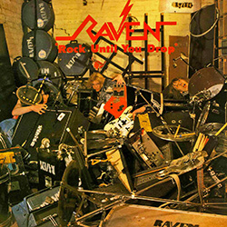, was released in 1981, recorded in 6 days at Impulse Studio under the direction of Steve Thompson 3 . The means are very meager and, pretty much, the album is recorded live. Yet the result is extraordinary and the album remains a major reference in the history of theNWOBHM . . Rock Until You Drop is a huge success, receiving 5 stars in Sounds magazine and a rave review by Geoff Barton. He climbs up to the 63 th position in the UK charts. The album is accompanied by a single, Hard Ride / Crazy World . Raven then participates on January 29, 1982 in the legendary show Friday Rock Show of the BBC .
{kind=link}
Raven released their second album Wiped Out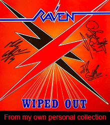 in 1982 .Raven wanted to do an album that was harder and faster than the one before and just went for it, playing as fast & crazy as possible! They completed their mission to put the live show into the studio! Since that album was suitably apocalyptic they had the idea of an atomic bomb cover, Dave Wood (Neat Records’ owner) was unusually animated and put his foot down – ‘nope, can’t do that… Disgusting… Poor taste’ etc etc – and so Rob and John ended up in a room with the ultimatum ‘you have two hours to come up with something'! So John came up with the ’crossed flash’ logo, and the in-house Neat graphic artist added the ‘Wiped out’ lettering. Fortunately, they already had the back cover sorted so it wasn't what they wanted but it had to do.
{kind=link}
The other thing about ‘Wiped Out’ was that there was no title track; the song ‘Wiped Out’ had already been released as the B-side to the band’s first single ‘Don’t Need Your Money’ back in August 1980. “The title,” just fitted the album. One listen and you WERE wiped out! It also seemed suitably perverse to name it after a track that wasn’t actually on the album.
They did the entire album, and the Crash Bang Wallop EP,
recorded and mixed in six days. Just ridiculous!, especially when you realise that about a quarter of the songs were written on the spot in the studio! (To The Limit To The Top being an example).
John's used a Kramer XL8 bass for years..it’s on every track of the Wiped Out album for example. It sounds huge with distortion...
He would also use it clean with a bit of Chorus for arpeggiated parts like “Tyrant Of The Airways”, where it sounds like a finger picked guitar and a bass at once!
EP,
recorded and mixed in six days. Just ridiculous!, especially when you realise that about a quarter of the songs were written on the spot in the studio! (To The Limit To The Top being an example).
John's used a Kramer XL8 bass for years..it’s on every track of the Wiped Out album for example. It sounds huge with distortion...
He would also use it clean with a bit of Chorus for arpeggiated parts like “Tyrant Of The Airways”, where it sounds like a finger picked guitar and a bass at once!
In October 1982 Raven toured America with Anvil on a tour headlined by Riot. On the final night of the tour Raven joined Anvil on stage to jam on "Born To Be Wild".
As a precurser to the next album a single Born To Be Wild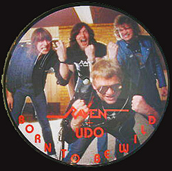 was released, a cover of the Steppenwolf song with Udo Dirkschneider of Accept. Michael Wagner and Udo Dirkschneider produced, it was the first time Raven had done any real pre-production. Fine-tuning the songs made a big difference, and of course, being able to walk in and knock the songs out in the first or second take is helpful. When they did the B Side - ”The Ballad Of Marshall Stack,” they looked up in the middle of the song, and Mike and Udo had fashioned Indian head-dresses out of recording tape and were “wardancing” around the control room!
{kind=link}
As mentioned Producers Michael Wagner and Udo Dirkschneider of Accept were drafted in for next album All For One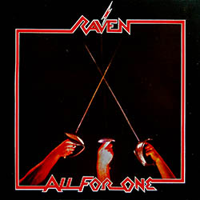 as RAVEN sought a more mature sound. It was also their first American release for Zazula's Megaforce label. All For One slowed the proceedings down to a more manageable tempo but hardened the band’s sound even more. Itwas massively heavy but accessible and catchy, too. Even in 1983, heavy metal’s most significant year, All For One stood out as one of the very best metal albums of the year. Still heavy and still totally mad but with a melodyand plenty of reverb. A more progressive sound with a more commercial feel. Musically the band is really tight, with non-stop catchy rhythms coated in high end vocal wails, shredding leads, and solos, and an attitude that's undeniably metal. Also, there is no lack for talent on this record. All the musicians are fully competent, overly energetic, and highly creative. These guys put alot into these songs, and its apparent. It is considered a definitive Heavy Metal album.
{kind=link}
A single Break The Chain was released from this album with a re-recorded version of Inquisitor on the B-Side.
was released from this album with a re-recorded version of Inquisitor on the B-Side.
This Affiliation led to RAVEN's first 36 date American tour called the Kill 'Em All For One Tour with opening act METALLICA, on their first ever tour. The tour name came from an amalgamation of the title of Metallica's first album "Kill 'Em All" and Raven's third ALbum "All For One"
The bandsnwanted to call the Tour the " Seek and Destroy" Tour as both bands had tracks of the same name but they were overruled by management!
The Tour Started on July 27, 1983 and ended on September 3, 1983 Further tours had EXODUS and ANTHRAX supporting.
with opening act METALLICA, on their first ever tour. The tour name came from an amalgamation of the title of Metallica's first album "Kill 'Em All" and Raven's third ALbum "All For One"
The bandsnwanted to call the Tour the " Seek and Destroy" Tour as both bands had tracks of the same name but they were overruled by management!
The Tour Started on July 27, 1983 and ended on September 3, 1983 Further tours had EXODUS and ANTHRAX supporting.
Raven 'gave' the German Heavy Metal Magazine Rock Hard its name in 1983 from the song of the same name.
At RAVEN's 1984 New York show the band headlined above METALLICA and ANTHRAX. Rumour has it that an A&R representative for Elektra Records was suitably impressed by RAVEN but upon inquiring to the band's name was informed it was METALLICA. Once signed the same person was confused to find the band he had signed were now a quartet and not a trio. Allegedly...
The Atlantic Years
The manager and founder of Megaforce Jon Zazula believed that Raven was major-label material and kept them touring constantly until the big labels noticed. The Live At The Inferno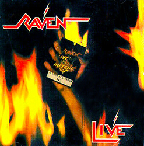 recording, released in 1984, was a product of one of those tours. Atlantic Records signed Raven to a worldwide contract after a minor bidding war (major label contracts would follow for Metallica and Anthrax in the following year). The band moved its permanent base from Newcastle to New York City. They were living in UPSTATE New York, it was a small town in farm country! It was a whirlwind of being on tour then marooned in nowheresville.
{kind=link}
Their first album for the label, Stay Hard in 1985.
Raven had previously thought they needed to record an album to get off Neat Records, so they had some tracks lying around.
When they had an interest from Atlantic, they brought those songs back in, songs like 'Extract The Action' and 'On And On'. They mixed did it with their sound engineer and the mix wasn't quite right,
so they brought in producer Michael Wagener to mix it and re-recorded a couple of songs. The record company asked for 'Hard Ride'and 'On And On', which were remixed.
It's got commercial aspects to it, but it's not a particularly commercial album. The band felt it was a natural progression to "All For One". The album was recorded in 2 weeks.
in 1985.
Raven had previously thought they needed to record an album to get off Neat Records, so they had some tracks lying around.
When they had an interest from Atlantic, they brought those songs back in, songs like 'Extract The Action' and 'On And On'. They mixed did it with their sound engineer and the mix wasn't quite right,
so they brought in producer Michael Wagener to mix it and re-recorded a couple of songs. The record company asked for 'Hard Ride'and 'On And On', which were remixed.
It's got commercial aspects to it, but it's not a particularly commercial album. The band felt it was a natural progression to "All For One". The album was recorded in 2 weeks.
It was a commercial success, but many fans felt that the album (as well as its follow-up, 1986's The Pack Is Back) was too polished and lacked the impact of their early work.
The first single from this album was Pray For The Sun.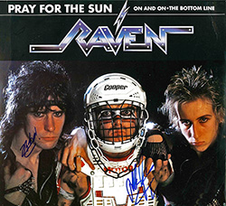
{kind=link}
A Promo single Restless Child was also released.
{kind=link}
Raven played with Keel as support on March 30th 1985 at The Lyric Theatre in San Diego. Malcolm Doom of "Kerrang" Magazine reviewed this gig and slagged off Rob Hunter for his drum antics. While playing in New York, Rob Hunter fell coming off stage and broke his arm. He sent a photo to "Kerrang" showing his plaster with a Message displaying what he thought of the review!
{kind=link}
RAVEN undertook a 1985 American tour utilizing JUDAS PRIEST's 'Screaming For Vengeance' stage set. The show included a pyro rocket firing guitar. The rocket guitar was supposed to be only flash powder, but the loony pyrotechnic technician put concussion powder in it. Basically, it blew the head off the guitar and set fire to the stage roof in San Diego!
RAVEN also contributed two tracks to the movie soundtrack of Hot Moves. Songs cut were 'Hot Moves' and 'Ladykiller'.
{kind=link}
There’s not much difference from “All For One” to “Stay Hard”. The bigger change was on The Pack Is Back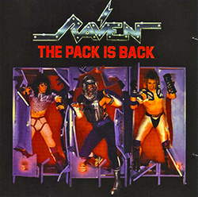, due to Rob insisting on recording with a click track, ten zillion recording tracks, pressure from the management/record company to be more commercial, a big part of their sound, but it’s tempered with the aggression and energy. When it’s unbalanced, you get “The Pack Is Back”! Rob is the kind of drummer that played behind the beat anyway, so that sucked the life out of it. It worked on a couple of songs, but on some of the others, it didn't. He wrote a lot of lyrics that were cringe-worthy. Definitely Top-40 pop. They all went along with it. They were young, and naive, and they were promised the world and that wasn't to be the case.
'The Pack Is Back' was produced by Eddie Kramer but was just too commercial and they lost a lot of their fan base. 2 Promo Singles were released from this album The Pack Is Back and Gimmie Some Lovin'{kind=link}
{kind=link}
 , a cover of the Spencer Davis Group song.
RAVEN toured once more with support from fellow brits TANK. Further shows supporting TWISTED SISTER where to follow but the headliner pulled out at the last minute.
In 1986 Raven toured with Judas Priest on their Turbo tour in the states and were told “You guys have got Carte Blanche, whatever you need, just please don’t smash any of our equipment."
They got great food and the sound man let them do whatever they wanted. They were just really good people. . The tour ended with support shows to YNGWIE MALMSTEEN.
, a cover of the Spencer Davis Group song.
RAVEN toured once more with support from fellow brits TANK. Further shows supporting TWISTED SISTER where to follow but the headliner pulled out at the last minute.
In 1986 Raven toured with Judas Priest on their Turbo tour in the states and were told “You guys have got Carte Blanche, whatever you need, just please don’t smash any of our equipment."
They got great food and the sound man let them do whatever they wanted. They were just really good people. . The tour ended with support shows to YNGWIE MALMSTEEN.
In 1986 Raven released the Mad Ep, to give a message to Atlantic that they were going back to their original sound.
Ep, to give a message to Atlantic that they were going back to their original sound.
The EP took 3 weeks to record.The had basic ideas for the songs in one ans a half days! They then rehearsed for 3 days. It had the musicianship of "The Pack Is Back" with all the abandonded energy of the first couple of albums.
Life's A Bitch [1987] followed this, which has a lot of anger in it but it was channelled in the right way..
Generally considered one of Raven’s best albums and a return to form.
The band basically holed up - wrote the album in 2 weeks and then recorded it using the engineer from the "Pack is Back" Chris Isca.
To promote 'Life's A Bitch' RAVEN made up a three band touring package including SLAYER and W.A.S.P. RAVEN fared well in front of rabid SLAYER fans intent on demoralizing W.A.S.P.
[1987] followed this, which has a lot of anger in it but it was channelled in the right way..
Generally considered one of Raven’s best albums and a return to form.
The band basically holed up - wrote the album in 2 weeks and then recorded it using the engineer from the "Pack is Back" Chris Isca.
To promote 'Life's A Bitch' RAVEN made up a three band touring package including SLAYER and W.A.S.P. RAVEN fared well in front of rabid SLAYER fans intent on demoralizing W.A.S.P.
Raven then did a showcase gig just for the record company at the Cat Club In New York on May 21st !987. The Atlantic Record Company people came early and left before they played, as the time of the gig was changed from 11pm to 1am. This was pretty depressing for them and more so for Rob. There was inner conflict as Rob was not too happy with the harder direction… but he probably plays the best he ever did on that album. Rob Hunter left after the Life’s A Bitch tour, ostensibly to spend time with his new wife & family, and eventually pursued a more sedate career in music production and engineering, working with Harry Connick Jr and Branford Marsalis amongst others.
Raven basically had no-one pulling for them any longer at Atlantic and decided to try their luck elsewhere. The 'Pack Is Back' costumes were ceremonially burned in 1987! RAVEN found an able replacement drummer in ex-SIMMONDS, BURNING STARR and PENTAGRAM drummer Joe Hasselvander prior to signing a new deal with Combat Records. Joe had just quit Savoy Brown and had stayed at their house in upstate NY a few times...He had same crazy influences and is an amazing drummer...so they got lucky!!
After signing to Combat Records the album Nothing Exceeds Like Excess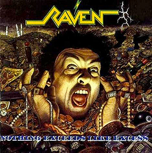 was released in 1988. Nothing Exceeds Like Excess, was self-produced and continued the band's return to form with fast, involved compositions. When they were writing for Nothing Exceeds Like Excess, Mark just sat down and started playing, and he played "Die for Allah" off the top of his head - stream of consciousness from start to finish. It's lucky they had the tape recorder running. That went on for like 7 minutes, and it's unbelievable, because there's all this light and shade, up and down and craziness and fast riffs.
{kind=link}
A concert at the Trocadero Theatre in Philadelphia was released by Combat Records as Ultimate Revenge 2 in 1989, and featured the band on 4 cuts, alongside a number of thrash bands such as Death, Forbidden and Dark Angel. At the Philadelphia gig they started with Die For Allah which is probably 250 beats a minute. The venue owner ran up on stage screaming into Mark's ear gesticulating wildly. Mark then started to die laughing barely able to play! John went over and shouted at him ‘what did he say, are we too loud’ he replied ‘no – he said we are too FAST!!!!!”
{kind=link}
RAVEN were back out on the road in America for headlining dates promoting 'Nothing Exceeds Like Excess' before another batch of gigs with TESTAMENT through into 1989. The band's first European tour for many years was offered with KREATOR (Extrene Aggression Tour), a German Thrash Band that had recently covered the RAVEN track “Lambs to the Slaughter”. Combat records pulled funding for the tour and Raven had to beg and borrow money to do the tour, the beginning of the end of the contract with Combat... Joe Hasselvander played drums on tracks 2-4, 10 on Armageddon USA - The Money Mask album in 1989.
{kind=link}
The Nineties
In 1990 John Gallagher assembled an extracurricular project titled SLIDER comprising of former BLUE CHEER, SIMMONDS and SHAKIN' STREET guitarist Duck McDonald, ex-THE RODS and SIMMONDS bassist Gary Bordonaro and session player Bob Fortunato. The band issued one album The Slider Project on Feedback Records in 1990.
{kind=link}
Drakkar Promotion, a German management company responsible for acts such as Kreator and Running Wild approached them and Raven were ready for a change. They were recording in the Ton-Studio in Mohrmann in Germany when SPV/Steamhammer came along to listen in and offered them a contract. Impressed by KREATOR's organization RAVEN soon signed to their management and record label. The Architect Of Fear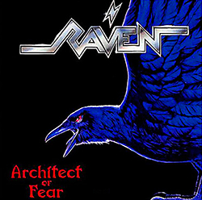 album, released in 1991 on SPV, was a welcome return to previous heaviness, probably their darkest/heaviest album. This is Raven’s Thrash album! It was recorded in a month in the studio, an age for Raven!
{kind=link}
RAVEN set out on European dates with RUNNING WILD in April and May of 1991. However, RAVEN was to go on ice shortly after. John Gallagher formed KILLERS with ex-IRON MAIDEN vocalist PAUL DIANNO, ex-TANK guitarist Cliff Evans, ex-DRIVE SHE SAID guitarist Ray Ditone and former PERSIAN RISK drummer Steve Hopgood for a proposed tour of South America. A rehearsal tape, recorded in an empty venue in New York, featuring Gallagher later surfaced as the South American Assault - Live album.
{kind=link}
A VHS Music Video Electro SHock Therapy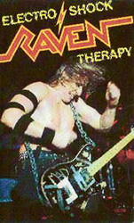 was released on SPV in 1991 featuring footage from the Architect of Fear European tour in 1991, directed by Todd Rock/Moving Pictures
{kind=link}
The 1992 EP Heads Up!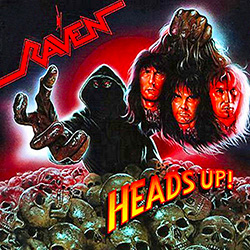 (unused tracks from “Architect of Fear”) prompted yet more European dates with support act RISK. The cover was a mockery of the covers of Death Metal Bands.
{kind=link}
The band spent the 1st half of 1993 writing and demoing new material, delays ensued due to John Gallagher having a house fire and thieves stealing guitars from the remains, a disastrous year for the band.
In 1994 RAVEN performed at the Los Angeles Foundations Forum in an effort to secure a new deal and stole the show alongside acts as disparate as Korn, Yngwie Malmsteen and Machine Head.
Before long RAVEN had signed to Japanese label Zero recording Glow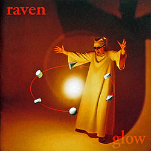 at Showplace Studios Dover NJ (notable for having a strip club connected to the tape closet! ) The album was self-produced and varied in feel, even sporting a few ballads alongside heavier material such as "Altar" and "Enemy"..a cover of Thin Lizzy's "The Rocker" also made the album...
{kind=link}
Hungry for the road the band performed American dates in early 1995 with WIDOWMAKER and ANVIL before headline shows of Japan. One of these shows became the Destroy all monsters- Live in Japan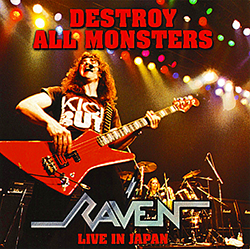 album. The band toured Germany alongside TANK and newcomers HAMMERFALL during 1997.
{kind=link}
In 1997 they released the album Everything Louder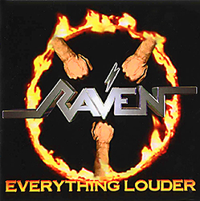on SPV. Recording sessions took place in Manassas VA at future Brett Michaels guitarist Pete Evick's studio and the recording was a frantic affair done over 4 weekends with almost no reheasal They spent a long time writing and spent no time rehearsing, because they wanted to catch that spontaneity. The live in the studio feel is killer, the playing is great and on the edge, and just great songs, although it was recorded in a really cheap studio
{kind=link}
The band returned with renewed vigour during 1999 with a fresh studio album One For All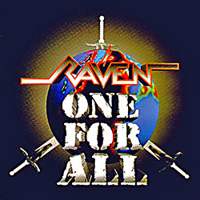 produced by Michael Wagener at his studio in Nashville. There was got fast rockers, heavy rockers, rock & roll and some moodier pieces... great sound & that "live in the studio" feel.. The album would be issued in Europe by Massacre Records and the following year licensed into America via Metal Blade.
{kind=link}
A retrospective box set, provisionally entitled 'Stark Raven Mad', would also be announced but fell by the wayside.
The band therefore took matters into their own hands issuing a collection of demos and rarities billed Raw Tracks .
Various territories saw differing track listings with the American version closing on a take of QUEEN's 'Tie Your Mother Down'.
Japanese variants ended with 'All For One' and 'Young Blood' whilst the European imprint's last tracks would be 'Architect Of Fear' and 'Enemy'.
It also featured the track “Hot Moves” from the movie of the same name which was my suggestion to John Gallagher (via online chat of the Raven website)
and he thought it was a great idea!
.
Various territories saw differing track listings with the American version closing on a take of QUEEN's 'Tie Your Mother Down'.
Japanese variants ended with 'All For One' and 'Young Blood' whilst the European imprint's last tracks would be 'Architect Of Fear' and 'Enemy'.
It also featured the track “Hot Moves” from the movie of the same name which was my suggestion to John Gallagher (via online chat of the Raven website)
and he thought it was a great idea!
2000s
RAVEN toured Germany in early 2000 as guests to U.D.O. The two acts would unite once again for a series of American mid Summer 2001 dates. The band looked set to get back in gear during 2002, announcing German summer festival gigs, but these would be curtailed when guitarist Mark Gallagher suffered a horrendous accident.
In 2001 Mark got into a car accident and his head smacked into the car windshield.
Days later, he almost lost his legs at a construction site in Florida when a wall fell over on him. Strangely, had he not been in the car accident, he would probably have lost his life. On the construction site, you have to wear a hard hat, but Mark couldn't because of the lump on his head, so he just had on a baseball cap, They were building this 100 feet long, five feet wide and 20 feet high wall and unfortunately it wasn't braced and it was windy. The wind kept blowing his hat off and it saved his life because he kept chasing the hat. When the wall came down it landed on his legs. If it fell on him fully, it would have killed him. It shattered both of Mark's lower legs like eggshells and nearly severed several major arteries. At first, the guitarist was in shock and didn't realize how badly he was injured. He actually called John Gallagher while he was waiting to be medevaced, and he was on the phone laughing, John said 'How you doing?' and he said, 'Not great, I had a wall fall on top of me.' He laughed it off, but basically his legs were crushed. His feet were pointing the wrong way. He had a piece of rebar right through one calf, and the other calf was ripped off altogether. His feet were disconnected, the ankles were smashed. They didn't know if he'd ever walk again. At one point, they wanted to cut one of his legs off.
Mark Gallagher underwent numerous operations to save his legs, and Raven were put on hold while the guitarist learned to walk again. In 2004, with Mark still in a wheelchair, Raven decided to play a couple shows. It was the beginning of slow, steady comeback. "In the beginning, it was hard," John said. "He had just had some operations, so he was throwing up in the middle of the gig and after he got over that and got out of the wheelchair, he had a 'Mad Max' leg brace. It was a huge thing which looked cool when he stomped around in it. Eventually, he was able to ditch that. So by 2005 we were out doing festivals without the brace." The recovery process proved slow and further complications would put the band on hold.
Both Mark Gallagher and Joe Hasselvander re-appeared in late 2002 uniting with former VIRGIN STEELE guitarist Jack Starr's new band project JACK STARR AND THE GUARDIANS OF THE FLAME for the February 2003 album Under A Savage Sky.
{kind=link}
Determined to keep playing, the band staged an American tour in 2004, and Mark played in a wheelchair.It was the beginning of slow, steady comeback.
In 2004 Metal Print Records released For The Future a CD and DVD of Raven's Session filmed for the BBC back in 1981, performing 4 songs live at Newcastle University.
a CD and DVD of Raven's Session filmed for the BBC back in 1981, performing 4 songs live at Newcastle University.
In 2006 Raven recorded a 4 track demo with Kevin 131 at his studio the Assembly Line Studios in Austin, Texas. They were highly impressed with the studio and recorded 4 tracks in 2 days! On sampler CD of the German metal magazine Heavy Oder Was, there was a demo track of a new RAVEN song called “Breaking You Down”. The demo is actually John Gallagher playing everything, even the drums – drum machine played finger style! I
A studio album, Walk Through Fire , appeared in 2009, recorded at these studios.
John did a lot of the songs in his little home studio. They did quite a few together. Joe had ideas... Mark had ideas... basically when Mark had his accident we concentrated on writing and
when he was literally back on his feet They jammed on some material also. So out of 25 – 30 songs we had to choose between them and decide which would be in the album,
they whittled it down to the ones that seemed to work the best as an album and went with that!
They took a lot longer to get this one done... Usually when you record an album, you mix it quick and its done. They had the chance to sit with it and tweak it, if needed.
They never had that luxury before, so it's got the good songs that were worked on over years in some cases — but recorded in a burst of lunacy — and then listened to and polished to a fierce shine.
Raven spent six days recording the basic tracks, two days on guitar overdubs and another three days tracking vocals. Then in 2008, they returned to the studio to add extra background vocals, some keyboards and other sonic touches. John is actually playing violin on the introto the album!
This album just rocks from start to finish and sounds and feels fresh — it's the real deal They wanted to make sure that all that songs on the album were cohesive and heavy and also had that RAVEN edge.
The record was released by King Records in Japan and Metal Blade in Europe
, appeared in 2009, recorded at these studios.
John did a lot of the songs in his little home studio. They did quite a few together. Joe had ideas... Mark had ideas... basically when Mark had his accident we concentrated on writing and
when he was literally back on his feet They jammed on some material also. So out of 25 – 30 songs we had to choose between them and decide which would be in the album,
they whittled it down to the ones that seemed to work the best as an album and went with that!
They took a lot longer to get this one done... Usually when you record an album, you mix it quick and its done. They had the chance to sit with it and tweak it, if needed.
They never had that luxury before, so it's got the good songs that were worked on over years in some cases — but recorded in a burst of lunacy — and then listened to and polished to a fierce shine.
Raven spent six days recording the basic tracks, two days on guitar overdubs and another three days tracking vocals. Then in 2008, they returned to the studio to add extra background vocals, some keyboards and other sonic touches. John is actually playing violin on the introto the album!
This album just rocks from start to finish and sounds and feels fresh — it's the real deal They wanted to make sure that all that songs on the album were cohesive and heavy and also had that RAVEN edge.
The record was released by King Records in Japan and Metal Blade in Europe
In 2007 Raven played the hard rock Hell festival in Minehead, England and went down a storm! They shared the bill with bands like Twisted Sister, Saxon & Girlschool.
2010s
Raven played the Rockhard Festival May 22nd 2010 - Orden Ogan, Evile, Bulldozer, Artillery, Raven, Exhorder, Accept, Kreato They paid tribute to the recently deceased Ronnie James Dio and played a passage of Man On The Silver Mountain.
A Sound of Thunder released an album under Nightmare Records called Out Of The Darkness. The album features Raven's John Gallagher on its signature song, "Out of the Darkness".
{kind=link}
In 2013, a retrospective DVD was released, entitled Rock Until You Drop – A Long Day's Journey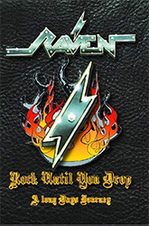, featuring never before seen footage of the band from 1982 onward, interviews with musicians including Lars Ulrich, Dee Snider, Dave Ellefson, Chuck Billy, Jon Zazula, and Chris Jericho.
{kind=link}
The band played the first full-scale tour of the US since 1989 headlining on the East Coast and joining forces for a double headlining jaunt through the West Coast with fellow UK NWOBHM stalwarts Diamond Head. November and December had the band playing Europe with old mates Girlschool as support, garnering favourable reviews for the energetic performances.
In January 2014 the band were featured on the 70,000 Tons Of Metal cruise from Miami to Mexico and played South America in March. Also in 2014 the hard-touring Raven crossed paths with their old friends Metallica, opening for the metal stars at a show in São Paulo, Brazil in front of a crowd of 70,000.
{kind=link}
They played Bogota, in the capital. here were about 2500 to 3000 people, excellent, crazy, crazy crowd. and they were so young. There was nobody older than 25. They were all wearing the denim jackets with all the patches and It was like a deja vu from the Netherlands back in 1981.
In 2015 Raven once again emerged from the studio with a new album, ExtermiNation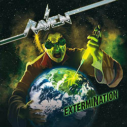, on SPV. The name “ExtermiNation”, was basically named by pulling the words out of the song, “Destroy All Monsters”, as it says “Exterminate”, which was just changed into “ExtermiNation” A Kickstarter campaign was initiated to help fund the recording costs of the album. They raised over $27,000, which was 80% more money than they were asking for! Kevin 131 [once again produced and mixed he record and Bill Wolf mastered it. Mark and John were sitting in their living room with two acoustic guitars, and John just came up with the riff for “It’s Not What You Got”, Mark told him to keep playing it, they recorded it, and within five minutes they had a new song! Then a couple of other things, like the acoustic part called ‘Golden Dawn’ before the song ‘Silver Bullet’, John had bought a twelve-string acoustic a month or two before and that was the first thing to come out of it. When you get different guitars you’ve got different songs hidden in them. John picked the guitar up and that was the first thing he played. So he noted that down and it seemed like a great little intro that we would use on something and it turned out nice. Then, ‘River Of No Return’ was something they had on acoustic, Mark just entertaining himself, playing around and finger-picking all the parts in it. When they were putting material together, they were like, if this was arranged for the band, how would we do it? So they came up with the idea, and as you hear on the intro, all the parts are played on eight-string bass with chiming harmonics and all that stuff going on, that way Mark could make crazy noises in the background. It developed into something else which was really cool. The songs were written in a specific way. They wanted to strip away anything that’s extraneous, to make sure that everything you have in the song is a highlight. Everything is a hook, that the vocals are melodic, the guitar parts have great riffs, the solos catch your ear, the drum parts have memorable stops and starts. The bass is solid and has some cool fills. They highlighted the little parts that make the Raven sound original. The song is king. They wanted an album that was cohesive and not just a pile-up of a bunch of different songs, but also was diverse. So you’re not listening to seven songs played in E at 120 beats per minute. It varies. There are different time signatures, different feels, but by and large, they are all heavy. It cuts across. They wanted it to sound similar to their live shows. John’s son Rory, plays guitar, a Strat. He does some backing vocals on the new album; he does some chanting on “Battle March/Tank Treads”
{kind=link}
As part of the Kickstarter campaign an exclusive album was offered for the backers, a cover album called Party Killers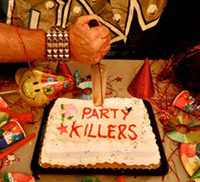. The idea for the album came from Raven going to a party in Germany and their manager’s son or nephew was a DJ and he was playing all this horrible disco at a big party, with a lot of people dancing on the floor, and they said ‘Play “Sheer Heart Attack” by Queen.’ He did and the place emptied and they were standing there like proud fathers, saying “party killers, yeah". It’s a set of cover songs that Raven rattled through when they were in the rehearsing stage for the record in Richmond, Virginia. These are songs near and dear to their heart from their youth, music that inspired them. So you’ve got bands like Thin Lizzy, Status Quo, Slade, Sweet, Queen, David Bowie, and a variety of material. It’s a great companion disc to ExtermiNation. They did the whole thing in three days and it is just awesome. On the first day of recording they did “Ogre Battle.” They got food and Joey insisted, “You guys eat, I’ll just play the song.”So he’s in there playing “Ogre Battle,” the engineer introduces us to this guy Mark, “Hi Mark! How you doing?” Just an unassuming little guy in long hair and shorts. Turns out it’s Mark Morton from Lamb of God! He said, “What’s going on?” “Oh, we’re doing ‘Ogre Battle’ and we’re doing these cover tunes.” He says, “Nobody else is playing.” “Yeah, he knows the song.” “But there’s no click track.” “Yeah, we don’t do click tracks.” “How’s he doing that?” “Because this is how you play music!” He loved the hell out of that!
{kind=link}
Raven then toured Japan,and America, They embarked on a European tour, the last gig played on this tour was the festival in Holland, and featured Night Demon and their old friends Satan, Tyson Dog and Tokyo Blade it was like a high-school reunion. They played the UK in October 2015.
Armageddon USA - Up In Flames was released in the summer of 2015, Raven members John Gallagher (contributing bass on three tracks) and Joe Hasselvander (handling all drum duties in addition to filling in on bass & guitar) helped complete the album. Joe Hasselvander contributied timekeeping abilities to several tracks on their "The Money Mask" album in 1989 as previously mentioned.
{kind=link}
In 2015 A Sound of Thunder released an album called Tales from the Deadside with the tracks "Icarus - Borne on Wings of Steel (Kansas)" and "Space Truckin' (Deep Purple)" featuring John Gallagher.
{kind=link}
In 2016 on S.A. Adams album - "A Murder of Crows, John Gallagher played on the track Samurai.
{kind=link}
Also in 2016 John Gallagher played bass on the album System Deceive by AraPacis.
{kind=link}
In May 2017 Joe Hasselvander suffered a heart attack 2 days before a string of US/European dates. Joe really didn’t want to be out on the road anymore, he was basically done and he was complaining, ‘Why you booking these dates, you’re going to kill me’. Basically they had 4 dates in the States, a few days off, a short European tour and then an American tour and then festivals. So they had quite a workload coming up and they go, ‘Oh god’. For Two days they get a guy in because they booked a rehearsal, they hadn’t played in 6 months, they booked a rehearsal in Chicago, Jimmy Mess comes in, does a great job and then the next 3 dates a friend of theirs says, ‘I’ve got this guy Mike Heller (Fear Factory), he’ll fill in’. OK! Mike turns up, he charted everything, they talked for half an hour and walked out and played a perfect show. It’s like, ‘What? How?’ They did 2 more shows with him and each show got better and better. Fabio Alessandrini ( Annihilator) did the Muskelrock (Sweden) festival..and Dave Chedwick did the 11 date tour of Europe.
At this point Mike Heller was asked to tour with the band. When they told him to loosen it up, he loved that idea because of course playing with Fear Factory it’s very regimented, very machine like, no improvisation, no nothing. This is like letting the animal out of the cage, he’s got that freedom. Playing in a three piece in a band like Raven is an absolute total different animal but he’s a younger guy, he’s got different influences. So he can take the crazy stuff from death metal and black metal and what have you and put that in a totally harmonically different environment , you come up with something totally different which is fun. So there’s a couple of items on the coming brand new album where there’s blast beats out of nowhere and you’ve got that against a really melodic part. Who’s done that? No one’s done that so it fits, it’s exciting and he’s totally into it and the rest of the band are totally into it and it definitely gave Raven a kick up the arse and it has been a lot of fun for the band. They have done 200 hundred shows at this point and still haven’t rehearsed!
Gallagher brothers invited Mike Heller to play the upcoming Euro festival dates they had booked (Bang Your Head, Leyendes Del Rock, Headbangers Open Air, Metal Days and Alcatraz) as his fiery playing was a perfect fit. The band then embarked upon a 70 date European run with 50 dates as special guests on the Dirkschneider " back to the roots 2" tour...and 20 select headline shows.
Raven then toured South Korea, Eastern Europe, JAPAN, South America , Australia, Spain, Belgium and North America
In 2018 Raven agreed, along with their record company Steamhammer Records, to allow to the song “Destroy All Monsters” be included in Filmmakers Terry R Wickham's suspense-thriller Double Vision. He has been listening to Raven since their Wiped Out album and All For One albums. He was listening to Raven’s most recent album ExtermiNation and when “Destroy All Monsters” came on he thought that is the song he would like to use. In a scene one of the main characters is getting ready for a very special event, getting dressed and doing her make up. While she’s doing this, she was listening to a song that would represent what she’s thinking versus what she’s actually doing. The setting is very soft and feminine, where as the song is super aggressive and even angry, which will absolutely represents what she’s really thinking, the song’s lyrical content is like a bullseye arrow into the thoughts of one of the female character The Red CarpetWorld Premiere of Double Vision was in his hometown of Everett, Washington at the prestigious Historic Everett Theatre on August 4 2019 In Janruary 2019 Raven released the live album Screaming Murder Death From Above: Live In Aalborg, through SPV/Steamhammer recorded in November 2017 at the concert in Aalborg, Denmark. The band had a flash drive with the recording delivered to them and when they checked it, they realized that – barring some small technical problems – they had a truly magical live recording on their hands. It was a near perfect concert thanks to the great atmosphere inside the hall and their out of control attitude – since, they weren’t aware the show was being recorded. It’s the unbridled show,. it's real. The only thing they fixed was - John broke a string on the bass, which he never does. It was like five seconds of dead air, with his headset he’s singing and running over to change basses, and take the wire side of one, plug it in the other, put it on, and five seconds of dead air. So they fixed that because it obviously would have sounded ridiculous otherwise. Other than that, everything is real. Everything is exactly as it happened.
{kind=link}
{kind=link}
Currently the band are hard at work on a new studio album. Apparently the new album sounds like what the album after 'Wiped Out" would be like had they continued in that vein. It's very fast with a lot of parts and hooks but with some melodic elements. There's one called 'Top Of The Mountain' which they've already played live, 'When Worlds Collide' which is very heavy, 'Metal City' which is about Newcastle, a tribute for Lemmy called, 'Motorheadin'' which is very fast. They decided to let loose and let a little of the unpredictability come out…..WILD AND UNTAMED!
John Gallagher is providing backing vocals for Annihilator's new album expected in Janruary 2020.
Influences
Their influences were bands from the early '70s - such as Slade, Status Quo, Deep Purple, Groundhogs, Budgie, Black Sabbath, Judas Priest, Rush, Sweet, Wishbone Ash, Nazareth and Yes - even back to Arthur Brown!
They went to a LOT of concerts in the 70’s… Status Quo, Budgie, Wishbone Ash, Rainbow, Blue Oyster Cult etc etc etc… but the first show they saw was in 1973… Slade.. with The Sensational Alex Harvey band opening That literally blew away their minds & they knew it was what they wanted to do! Their second show was Status Quo - fantastic atmosphere.
They were also influenced by all the glam rock they saw on tv like T.Rex..Sweet… Mud…and of course Purple, Sabbath, Zeppelin.. along with Free, Bad Company, Uriah Heep, Pat Travers, Rory Gallagher, ELP, Yes, Genesis … one way or another they were influenced by it all.
The bands that were the reason that they wanted to start Raven were Slade & Status Quo! They thought they were both so great live..such great entertainers! Slade was the band that inspired Raven to take up music, Slade was a huge band in their development. The first album they bought was Slade Alive!. They thought the music was raw, uncompromising, and heavy, but with melody. This album influenced them greatly so much, Jim Leas' bass playing was a revelation to John Gallager. He thought he could outplay most guitarists!
{kind=link}
Deep Purple was a huge influence on Raven, just because they have that spontaneity and they feed off each other like on Made In Japan, where all that music comes to life! Live Roger Glover’s all over the place, Ian Paice is just driving it with his fills, Jon Lord’s playing around the riff, Blackmore’s playing really tight they thought it was just awesome, absolutely awesome. They loved the spirit of improvisation—Jon and Ritchie, they never played the same solo twice and that’s what Mark Gallagher does. He never plays the same solo twice.
{kind=link}
When John Gallagher was growing up there was the Queen Christmas Concert, in ‘75 and he was watching it. Back then there were no video recorders, so he was taping it with a microphone and poured over every note for the last 40 years.
They thought THE SWEET were such a great band. All the Pop singles had heavy songs on the b-sides like “Burning” and “New York Connection”, “Sweet F.A.” On their first album they covered Hellraiser / Action to played tribute to them and revved the songs up a bit!
THE WHO were almost a subliminal influence from their TV appearances
Another influence was Jazz-fusion in the '70's ala-mahavishnu orchestra! This kind of music has many time changes and unanticipated break downs in the songs! It takes a certain type of work ethic to learn this kind stuff as it does with Raven and their super tight and complicated music!
Rory Gallagher gave every show a hundred per cent. He was very influential in that manner, they saw him live 3 times.
Raven used elements and refined them in a slightly different direction, put a bit more energy into it. Then the bands that came after them removed some of the melodic content, put a little bit more discord into it, and put their own energy into it.
John Gallagher
He remembers banging pots and pans while watching The Beatles on Ready Steady Go...
Influences for his singing style were, Ian Gillan, Glenn Hughes, David Byron, Paul Rodgers, Rob Halford. John tailored his voice for a little bit of light and shade. Rob Halford’s performances on [Judas Priest’s] Sad Wings Of Destiny, Sin After Sin and Stained Class involved changing from song to song. It would be awesome. He’d change from album to album. There’d be a little bit of character, maybe even a little bit of playacting, in each song. So that was always an inspiration from the get-go for John Gallagher's singing style...
Ian Gillan’s screams was definitely a huge influence on John.
Influental Bassists include Gary Thain of URIAH HEEP with his killer melodic punchy bass lines, John Wetton of URIAH HEEP and KING CRIMSON, Andy Fraser of FREE, Chris Squire of YES - their music was built AROUND the bass - many times over and Jimmy Lea of SLADE, the band that inspired Raven to take up music, a huge part of the Slade sound was due to Jimmy's bass. Another was The WHO's John Entwistle - The man who was the eye of the storm known as The Who. He practically reinvented the instrument. The bass solo (who played bass solos in 1965 other than him?!) on 'My Generation' jumped out of the speakers. RUSH's Geddy Lee was an influence - on the Rush album All The World's A Stage you can actually HEAR what he's doing! CHEAP TRICK's Tom Petersson impressed in 1977 with his 12 string bass. John Gallagher thought to himself 'WHAT? 12 STRING BASS???' He HAD to get an 8 or 12 string! He loves both but prefers an 8 as there’s less tuning hassles…and after having an airline destroy a 12 once he thinks it's a bigger risk LED ZEPPELIN's John Paul Jones - A monster instrumentalist who came up with killer riffs ('Black Dog') and locked in with the fury of John Bonham to create the most powerful rhythm section in rock." Others were John Wetton, Greg Lake, Ronnie Lane, Jaco Pastorius, Jeff Berlin, Tom Peters Geezer Butler, Trevor Bolder, Burke Shelley andPino Palladin
As soon as they went as a 3 piece band John wanted to use counterpoint..octaves, two hand tapping, contrary motion..anything just to orchestrate what they were doing! John wanted a trem on a bass from day one - 1974!!! John started on thin strings was back 1976/77... He was playing a jazz bass copy & kept breaking strings... he figured if I tried lighter strings & hit them hard, they would go BOINNNNNG... bottom out and would compensate by playing a little lighter - and not break the string - He tried it & it worked - he also found out now he could bend strings... a lot!!! so when I set up the explorer I just took it to a new level.
In 1980a tech guy in a small indie guitar shop in Newcastle was building John a bass - neck through, body shape sort of rick front end, T-bird back end - played/sounded great. At a gig John threw it up high at the end of the gig...in midair..without touching anything...the head snapped off!!! He caught the pieces & being pissed off..destroyed the rest of the bass! Next day brought the case to the shop..explained what happened and said "Build me a bass that will not break!" John brought in his red explorer and said "think you can do a trem for this? He was up for the challenge & one week later - bang!!! the marriage of a schecter strat trem block, a new top plate and some p-bass bridge pieces and he was away...for 5 mins until the bar broke!!! So...he took a chrome vanadium screwdriver and thats what he uses for the bar to this day! From this came one of John's favourite instruments his homemade red explorer with a stock bass bridge attached to a Strat-style tremolo system. He still uses it to this day. The intro of "Chainsaw" is the first time John used the red explorer with the trem!
{kind=link}
A few of the tracks that John is proud of his playing on are.”Tyrant of the airways”, “To the Limit”, “Pray for the sun & Wilderness of broken glass” have some l use of 8 & 12 string basses… His solo stuff was documented n the “Live at the Inferno” album...He also had fun on “On the wings of an eagle” with the finger picked intro…and on more recent songs he did some nutty stuff on “Against the Grain” and all over the Extermination album. The playing on the new live album is really good and where they are all pushing themselves on the upcoming studio album..
John Gallagher is proud he has never lost his voice he is certain that his range is 99.999999% of what it was when he was 21!
Mark Gallagher
For Mark, Ritchie Blackmore was a big early influence, as well as STATUS QUO for the rythmn tightness.
One of the things that gives Raven a unique sound is that Mark plays a Fender Telecaster Tele 71 This came from Status Quo, they were huge Quo fans as kids. That was the guitar to get. Combined with the wrong amp it can sound like hitting sheet metal with a hammer. It can be very brash and trebly and nasty. Played through the right amp and of course these days, you can tart the pickups up with a humbucker to get rid of the noise and hum to give it a bit more power, but the first three Raven albums are single-coil pickups, straight-up Telecaster. It’s got the bite. You hit it hard and it kicks back.
{kind=link}
This guitar was used on the first 3 Raven albums.
Rigid playing was never Jimmy Page, that was never Ritchie Blackmore, it's certainly not Jeff Beck. That caliber of a guitar player, they'll go out and they'll try and make magic as they go along. Mark never plays the same thing twice. He always plays something different.
Rob Hunter
Gene Hoglan of Dark Angel talked about how he took stole bits from "Wiped Out", from Wacko’s drumming style. Which of course was cribbed from people like Terry Bozzio, Phil Collins and Billy Cobham [raps table like a snare roll], all that kind of flams, paradiddles So that’s great. That was very much a part of what they did with Wiped Out-“Let’s be fast, let’s be crazy, let’s up the ante and push it as far as we can.
Rob played guitar, Rob wrote songs – a multi instrumentalist.
Joe Hasselvander
Raven were very, very lucky to find Joe because they needed somebody to bring as much to the table as Rob did. A guy who plays guitar; a guy who writes; a guy who has vision and perception of what’s going on, like in an arrangement sense of things. Contrary to most drummer jokes, the drummer is usually the guy who has the full picture, so Joe’s very much got that.
Joe Hasselvander was playing with Savoy Brown when they saw him, it came to his solo he’d go bananas and blow the roof off. So there were definitely possibilities there –
On his audition they knew right off the bat. He’s sitting there listening to The Groundhogs – they love The Groundhogs! It turns out he liked all the glam rock stuff that they did when we they kids, he loved Slade and Status Quo and Sweet, he played guitar, he did a solo album where he did all the instruments. He has said that Ken Pustelnik the original drummer for The Groundhogs was one of his biggest influenced.
They were very, very lucky to find Joe because he needed somebody to bring as much to the table as Rob did. A guy who plays guitar; a guy who writes; a guy who has vision and perception of what’s going on, like in an arrangement sense of things. Contrary to most drummer jokes, the drummer is usually the guy who has the full picture, so Joe’s very much got that.
Mike Heller
He traces his musical and drumming influences across many genres, including gospel, Latin jazz and funk.
The drummers that influenced him were session great Tommy Igoe, progressive metal icon John Macaluso, and latin-jazz great Richie Morales.
Other influences were:
Marco Minnemann – for everything from his phrasing, to his independence (interdependence), to his musicality, to the humor in his music.
Vinnie Colaiuta – for the confidence he puts into absolutely everything he does, be it jazz, funk, pop, rock, whatever.
Dave Weckl – puts so much work into his craft, and tried to make absolutely everything musical.
Steve Smith/Dennis Chambers/Billy Cobham – he spent hours trying to work out parts that they’ve played, and they continue to make incredible music.
Rick Colaluca – the drummer from Watchtower. Watchtower is the band that initially showed him that metal didn’t always have to be straight forward. He doesn't think that the drummers in technical death metal bands would have the technical ability to play any of Watchtower’s songs! He loves the fact that he is just incredibly jazzy. He considers himself a fusion drummer, and Rick pretty much taught him how he could get that influence into metal.
Influenced
Bands and people that have disclosed Raven as one of their influences or inspirations:
Metallica, Anthrax, Megadeth, Strapping Young Lad, Devin Townsend, Fear Factory, Dethklok, Rage, Coroner, Doro Pesch, Sodom, Razor, Billy Sheehan, Skid Row, Chuck Billy from Testament and Mark Osegueda from Death Angel.
Kreator cited Raven as an influence and covered the Raven track "Lambs To The Slaughter" on their Out of The Dark... EP and took them on tour in 1989.
{kind=link}
Marty Friedman cited Raven's "Wiped Out" album as one of the maor influences on him and has appeared on stage with Raven twice in Tokyo, Japan in June 11th 2009 and March 14th 2019
(Dimebag) Darrell and Vinnie (Paul, both ex Pantera, Damageplan) saw Raven and Metallica in 1983 and it 'changed their lives. Phil Anselmo is also a fan.
Annihilator founder Jeff Waters had plane spotting sessions from his car while listening to "All For One".
The drummer Chris Kontos from Machine Head headbanged to Raven at the 1994 Foundations Forum.
Gene Hoglan, the drummer with Dark Angel was influenced by Raven's "Wiped Out" album specifically Rob Hunter's Double-Bass drumming.
Flotsam And Jetsam used to play Raven cover songs
VOIVOD performed RAVEN's "Chainsaw" at their first-ever concert in early 1984.
In 2015 Deceased covered the Raven song "Wiped Out" on their Cadaver Traditions album
{kind=link}
A tribute album to the New Wave of British Heavy Metal called The The GRANBRETAN INVASION was released in 2018 with a cover of "Inquisitor" performed by the band Avenger.
{kind=link}